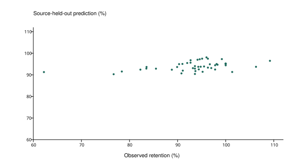
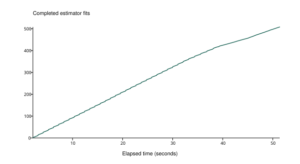

模型v1.3：新参数与辅助数据已实际训练
已完成508/508次拟合；预定主方案MAE4.9249、RMSE6.7422、R²0.1386，可靠性门槛未过。1,147项材料数值有实际拟合回执；不是3,727项全部被模型使用。
| 方案 | MAE | RMSE | R² |
|---|
| 只猜训练来源均值 | 5.1490 | 7.4707 | -0.0576 |
| 上次模型v1.2（历史方案） | 5.1509 | 6.9087 | 0.0955 |
| 本轮同一配方＋旧输入 | 5.0454 | 6.8659 | 0.1067 |
| 本轮新参数 | 5.0134 | 6.8675 | 0.1063 |
| 本轮新参数＋树模型 | 5.7856 | 7.9093 | -0.1854 |
| 本轮新参数＋辅助学习（预定主方案） | 4.9249 | 6.7422 | 0.1386 |

按来源留出。保持率可真实高于100%，没有统一截断。

进度来自每一次完成拟合后的持久回执，共508次、约52秒；不是模拟进度。
辅助任务与使用量
| 任务 | MAE | RMSE | R² |
|---|
| capacity | 96.1712 | 132.9482 | 0.0887 |
| BET | 734.9518 | 956.6479 | -0.0435 |
最终辅助系统使用1,072项材料数值；整个实验去重1,147项，跨任务不可相加。74来源组含原循环来源，不是本轮新增74篇论文。
记录与复现
training_plan.json input_audit.json training_projection_masks.json results.json actual_fact_utilization.json outer_predictions.csv verification.json README.md
两页白话报告